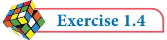

Solution
Note
Now, (B ÇC) = \(\frac{15}{42}\) , 2, The set difference in general is A Ç (B ÇC) = \(\frac{1}{4}\) , 2 ... (1) not associativethat is, (A - B) \(- C^{1}A -\) (B - C). Then, A Ç \(B =\) 0, \(\frac{13}{44}\) , , 2 But, if the sets mutually disjoint then the set A, B and C are (A Ç B) ÇC = \(\frac{1}{4}\) , 2 ... (2) difference is associativethat is, (A - B) \(- C=A -\) (B - C).
From (1) and (2), it is verified that
(A Ç B) ÇC \(= A\) Ç (B ÇC)

- 1.If \(P = {1 2\), ,5,7,9}, \(Q = {2,3,5,9 11\), }, \(R = {3,4,5,7,9}\) and \(S = {2,3,4,5,8}\), then find
- (i)(P ÈQ) È R (ii) (P ÇQ) Ç S (iii) (Q Ç S) Ç R
- 2.Test for the commutative property of union and intersection of the sets
\(P =\) { x : x is a real number between 2 and 7} and \(Q =\) { x : x is a rational number between 2 and 7}.
- 3.If \(A =\) {p,q,r,s}, \(B =\) {m,n,q,s,t} and \(C =\) {m,n,p,q,s}, then verify the associative property
of union of sets.
- 4.Verify the associative property of intersection of sets for \(A =\) { \(- 11\), 2, 5,7},
\(B =\) { 3, 5,6 13, } and \(C =\) { 2, 3, 5, 9}.
- 5.If A={x : \(x = 2\) , \(n \in W\) and n<4}, \(B =\) {x : \(x = 2n\), \(n \in\) and n £ 4} and
\(C = {0 1 2\), , ,5,6}, then verify the associative property of intersection of sets.